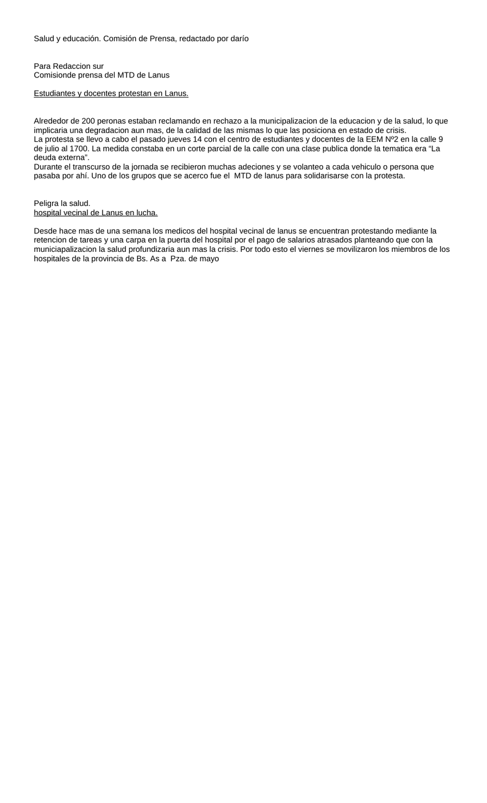

Primera hoja de salud y educación.doc. Clic en la imagen para abrir o descargar el archivo original.·20.0 KB·1 hoja

Salud y educación. Comisión de Prensa, redactado por darío
Para Redaccion sur
Comisionde prensa del MTD de Lanus
Estudiantes y docentes protestan en Lanus.
Alrededor de 200 peronas estaban reclamando en rechazo a la municipalizacion de la educacion y de la salud, lo que implicaria una degradacion aun mas, de la calidad de las mismas lo que las posiciona en estado de crisis.
La protesta se llevo a cabo el pasado jueves 14 con el centro de estudiantes y docentes de la EEM Nº2 en la calle 9 de julio al 1700. La medida constaba en un corte parcial de la calle con una clase publica donde la tematica era “La deuda externa”.
Durante el transcurso de la jornada se recibieron muchas adeciones y se volanteo a cada vehiculo o persona que pasaba por ahí. Uno de los grupos que se acerco fue el MTD de lanus para solidarisarse con la protesta.
Peligra la salud.
hospital vecinal de Lanus en lucha.
Desde hace mas de una semana los medicos del hospital vecinal de lanus se encuentran protestando mediante la retencion de tareas y una carpa en la puerta del hospital por el pago de salarios atrasados planteando que con la municiapalizacion la salud profundizaria aun mas la crisis. Por todo esto el viernes se movilizaron los miembros de los hospitales de la provincia de Bs. As a Pza. de mayo
Transcripción del documento original salud y educación.doc. Se conserva la ortografía del original.